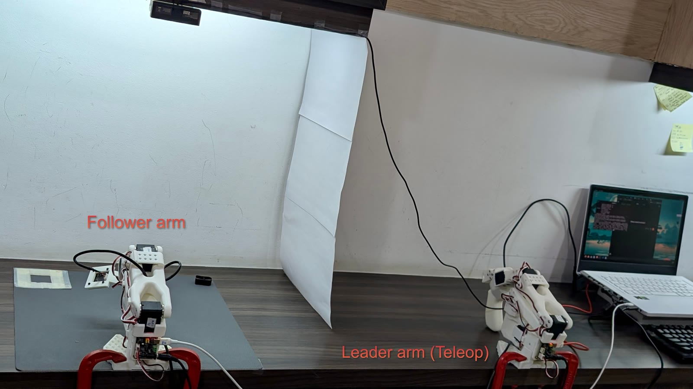
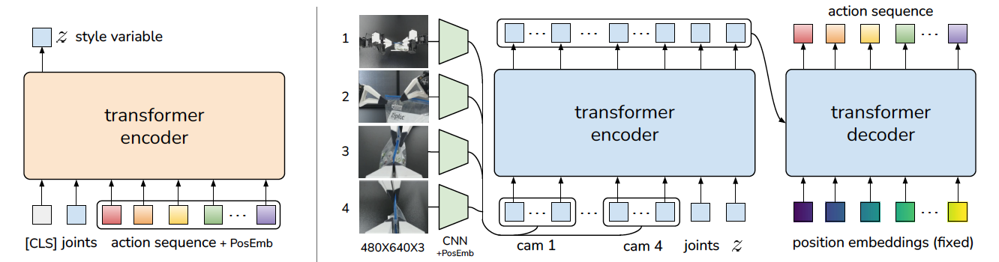
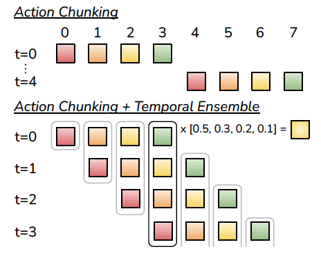
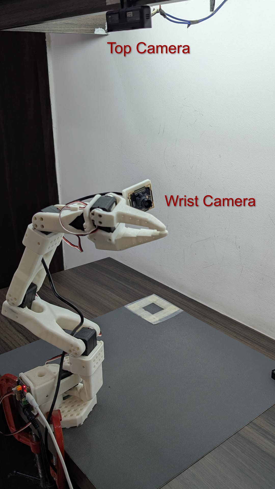
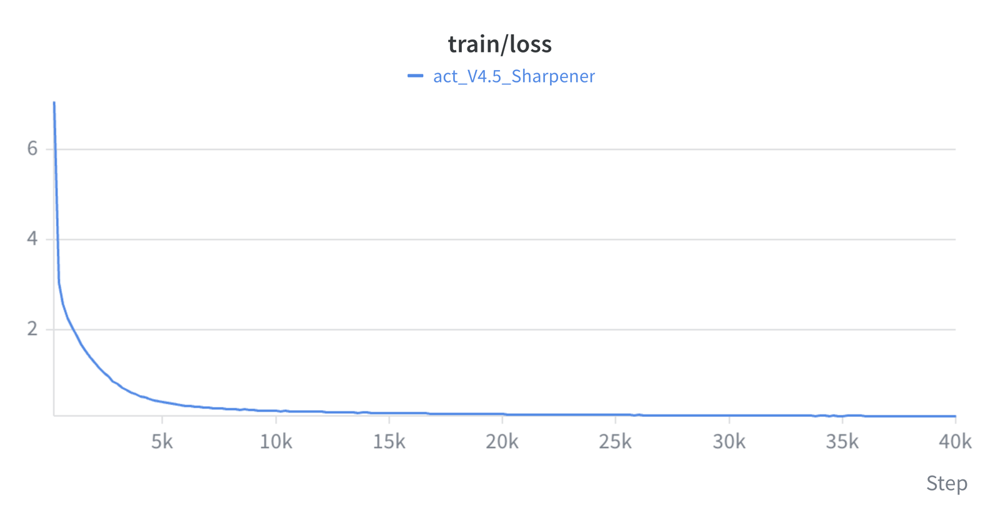
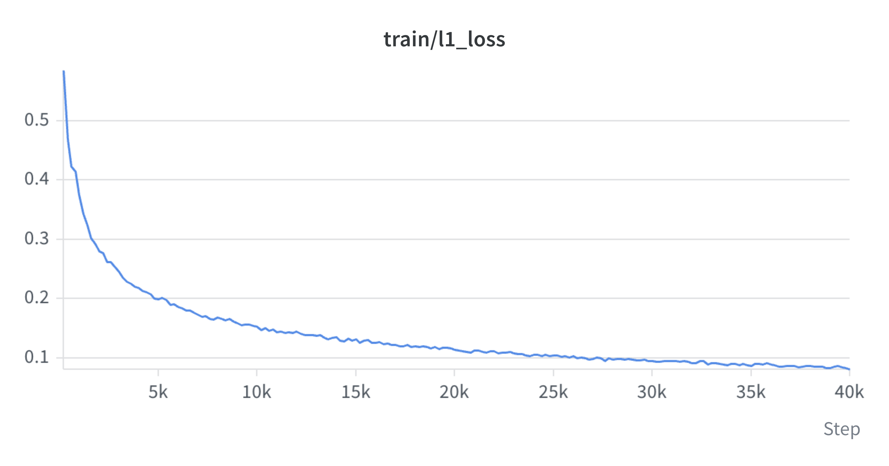

Teaching an SO-101 to Pick Up a Sharpener
- Dataset: 45 episodes (teleoperated demonstrations)
- Optimization: 40,000 training steps
- Robot: SO-101 ARM
- Visual observations: Top-down and wrist-mounted RGB cameras (plus joint-state measurements)
- Policy: ACT (Action Chunking with Transformers)
- Framework: Hugging Face LeRobot
- Training hardware: NVIDIA RTX 3060 Laptop GPU

Result
8 of 14 episodes succeeded cleanly (57%), 2 achieved partial success (14%), and 4 failed (29%) at checkpoint step 40,000. The failures were systematic: all four occurred under out-of-distribution object placements, either at the boundary of the in-distribution workspace region or shifted 2–3 cm from the demonstrated location. For in-distribution placements, the policy achieved 8 clean successes and 2 placement near-misses across 10 episodes, with no complete failures. For out-of-distribution placements, it achieved 0 clean or partial successes across 4 episodes.
The Task
Pick up the object and place it in a bin. There are no scripted waypoints or grasp() function. The policy must infer reaching, alignment, grasping, lifting, transport, and release entirely from demonstrations in the physical world, with no retry mechanism within an episode.
- Locate the object
- Reach toward it
- Align the gripper
- Close and grasp
- Lift
- Transport toward the bin
- Position above the bin
- Release
Project at a Glance
| Task | Pick up sharpener and place it in a bin |
| Robot | SO-101 (physical, not simulated) |
| Policy | ACT (Action Chunking with Transformers) |
| Framework | Hugging Face LeRobot |
| Demonstrations | 45 episodes, teleoperated |
| Training | 40,000 steps, batch size 8 |
| Training hardware | NVIDIA RTX 3060 Laptop GPU |
| Training time | 7h 14m (434 min) |
| Evaluation | 14 real-robot rollouts, checkpoint 040000 |
| Success rate | 8/14 clean (57%), 2/14 partial (14%), 4/14 fail (29%) |
Method: ACT
A standard behavior-cloning policy predicts one action at a time from the current observation, executes it, and re-predicts. Two failure patterns follow from that: small errors compound over a long episode, and re-deciding at every timestep can make the arm jitter instead of committing to a motion.
ACT instead predicts a short chunk of future actions in a single forward pass; the robot executes the chunk, then re-plans from a fresh observation. Fewer re-planning points means fewer chances to drift, and each chunk is trained to be a coherent trajectory rather than an isolated guess.
Images + Joint State (+ z) → ResNet-18 Vision Backbone → Transformer Encoder → Transformer Decoder → Chunk of k Future Actions

Architecture
The policy is built as a compact perception-to-action stack. Vision is encoded once, the current state is fused into a shared context, and the decoder turns that context into a short, coordinated action sequence.
- Vision backbone: ResNet-18. Each camera view passes through a shared, ImageNet-initialised ResNet-18, producing a compact grid of visual features with positional embeddings. The backbone is intentionally task-agnostic: it provides visual representation, not task-specific rules for the arm or object.
- Transformer encoder: shared context. The encoder combines visual features, current joint positions, and the learned latent variable into a single context representation. It does not issue commands; it establishes the information the action decoder can attend to.
- Transformer decoder: action generation. The decoder cross-attends to that context and predicts a coherent sequence of joint commands, one action for each step in the chunk.
What goes in, what comes out
- Inputs: multiple RGB images, here a wrist view and a front/top view, the current robot joint positions, and a latent style variable z. The latent variable is learned during training and set to zero during inference.
- Outputs: a chunk of k future actions. LeRobot’s
chunk_sizedefaults to 100, so one forward pass returns 100 future joint-command steps rather than a single next step.
At the heart of it is an encoder–decoder transformer: provide an image, the current robot state, and the optional style variable z, and it returns the next chunk_size actions. The decoder is not given a trajectory to copy. Instead, it receives learned embeddings for each step in the chunk. As these embeddings are transformed in the context of the encoder’s memory, they become the actions that form the predicted trajectory. In short, action chunking generates a coordinated sequence from embeddings conditioned on the current observation.
The policy is compact, with roughly 80M parameters in this configuration, making it suitable for overnight fine-tuning on a single laptop GPU. It is not a vision-language-action model: there is no language prompt or generalist backbone. It is a task-specific imitation-learning policy trained end to end on demonstrations collected for this task.
ACT’s default temporal_ensemble_coeff is None; temporal ensembling is opt-in, not automatic. Since this run used LeRobot’s defaults, inference used plain chunked execution: each forward pass emitted a chunk of actions, the arm executed it, and a fresh chunk was predicted from the next observation. The overlapping, exponentially blended strategy in Fig. 3 was not used in this run; the figure is included to show an alternative supported by ACT.

n_action_steps = 1). arXiv:2304.13705
Observations
- Two RGB streams: a top-down view and a wrist-mounted view, 640×480 @ 30 fps.
- The arm’s current joint positions, providing proprioceptive state at every timestep.
- That is the entire observation: no depth, no force or tactile sensing, no language prompt, no simulator state.
Actions
- Joint commands recorded during SO-101 leader-arm teleoperation. These demonstrations provide the target actions for supervised policy learning.
- Predicted as a chunk, not one step at a time: a single forward pass returns the next
chunk_sizesteps (LeRobot’s default is 100), and the arm executes that block before re-planning. - The style variable z is the one input that only exists at training time; at inference it is zeroed out, so the observation above is all the policy gets.
Data Collection
45 episodes, recorded via teleoperation into a LeRobot dataset. At this scale, every episode carries weight where inconsistent grasps or start poses get learned as part of the task, and whatever position/lighting variation exists across the 45 episodes is roughly the variation the policy has any reason to handle.
Teleoperation → 45 Episodes → LeRobot Dataset → ACT Training → Trained Policy → SO-101 Inference
Training
Standard supervised learning on demonstrations: sample a batch, compare the policy’s predicted action chunk against what the human actually did, update the weights. Repeat 40,000 times.
| Parameter | Value |
|---|---|
| Policy | ACT |
| Training steps | 40,000 |
| Batch size | 8 |
| Hardware | NVIDIA RTX 3060 Laptop GPU |
| Training time | 7h 14m (434 min) |
| Final objective value | 0.0845 |
No cloud GPU or workstation was required. A mid-range laptop GPU was sufficient for this experimental scale.


Same run, two y-scales. ACT’s total loss is the L1 action-reconstruction loss plus a weighted KL term on the latent style variable z (kl_weight is 10 by default). Zoomed in on the L1 term alone, the “plateau” in Fig. 5 turns out to be a long, slow, steady decline.
That difference matters when interpreting the evaluation result. Approximately 75% of this training run produced little additional reduction in the total objective: it fell from approximately 7 to below 1 during the first 4,000 steps, then declined gradually to 0.0845 at step 40,000. Fig. 6 provides the more informative view of the late-stage updates. The L1 term continued to decrease from approximately 0.16 at 10,000 steps to 0.10 at 25,000 and 0.08 at 40,000, ending within one thousandth of the total objective. This indicates that nearly all residual error was associated with action regression on the demonstrated positions rather than the latent style term. Combined with reliable in-distribution execution and complete failure under several-centimeter out-of-distribution shifts, the more likely interpretation is not insufficient optimization. The additional steps appear to have improved fit to the 45 demonstrated positions without producing a position-invariant grasp strategy.
Challenges
Structural to ACT-style imitation learning
(properties of the approach, not this specific run)
- Competence is bounded by the situations present in the dataset; fine on the training distribution, uncertain just outside it.
- Teleoperated data carries human noise: hesitation, small corrections, varying grasp approach.
- Grasping is contact-rich and unforgiving of small positional errors.
- The policy is coupled to the exact camera viewpoint(s) it trained on.
Specific to this run
- Grasp execution was imprecise in 2 of 10 in-distribution episodes. The policy reached and closed on the object, but placement fell just short of the bin.
- At the boundary of the in-distribution workspace region, the policy made a second grasp attempt rather than committing once. It failed while attempting to recover, rather than failing silently.
- In one recorded case, that behavior produced a successful recovery: the arm made three grasp attempts at an out-of-distribution placement. The first two attempts did not secure a grasp, but each moved the object closer to the demonstrated workspace region. By the third attempt, the sharpener had effectively returned to the in-distribution region and was grasped cleanly.
- A wrist-camera dropout during one episode did not terminate the rollout. This is a single observation, not evidence of general robustness.
Evaluation & Results
Checkpoint step 40,000, 14 real-robot rollouts (lerobot-rollout, episodic strategy).
| Ep # | Position | Outcome | Notes |
|---|---|---|---|
| 0 | in-distribution | Pass | Not applicable |
| 1 | in-distribution | Pass | Not applicable |
| 2 | in-distribution | Pass | Not applicable |
| 3 | in-distribution | Pass | Not applicable |
| 4 | in-distribution | Pass | Not applicable |
| 5 | out-of-distribution, shifted 2–3 cm | Fail | outside demonstrated workspace region |
| 6 | in-distribution | Pass | wrist camera froze mid-episode; succeeded despite the dropout |
| 7 | in-distribution | Partial | grasped, but placement missed the bin due to imprecise placement |
| 8 | edge of range | Fail | two grasp attempts, both unsuccessful |
| 9 | edge of range | Fail | two grasp attempts, both unsuccessful |
| 10 | in-distribution | Partial | grasped, but placement missed the bin due to imprecise placement |
| 11 | edge of range | Fail | timed out on second attempt, object at gripper’s reach limit |
| 12 | in-distribution | Pass | Not applicable |
| 13 | in-distribution | Pass | Not applicable |
Aggregate:
- Overall: 8 Pass (57%), 2 Partial (14%), 4 Fail (29%)
- In-distribution placements (10 episodes): 8 Pass, 2 Partial, 0 Fail. Every episode moved the object off the table and near the bin.
- Boundary or out-of-distribution placements (4 episodes): 0 Pass, 0 Partial, 4 Fail. The policy achieved no successful placement once the object left the demonstrated distribution.
Failure-mode tally (4 full failures):
| Cause | Count |
|---|---|
| Out-of-distribution object placement | 4 / 4 |
Secondary issue (2 partial passes, both in-range):
| Cause | Count |
|---|---|
| Imprecise grasp/placement technique | 2 / 2 |
What worked / didn’t / surprised
- Worked: in-distribution placements. All 10 such episodes ended with the object grasped and delivered at least near the bin.
- Did not work: out-of-distribution placements. There were zero successful outcomes across all 4 attempts, indicating a hard boundary rather than a gradual performance decline.
- Notable behavior: at boundary placements, the policy attempted a second grasp in episodes 8, 9, and 11 rather than freezing. It did not reliably recover because the required behavior was not represented in the demonstrations. In Video 3, repeated attempts incidentally moved an out-of-distribution object back into the demonstrated region, enabling a successful third attempt. A wrist-camera dropout in episode 6 also did not cause failure. Both observations are isolated anecdotes, not robustness claims.
Limitations
Forty-five episodes constitute a small, single-condition dataset. The observed position sensitivity is consistent with that data regime: the policy reproduces demonstrated behavior effectively but has limited tolerance for unseen placements. This is not evidence of a limitation specific to ACT. It is the expected consequence of narrow workspace coverage and motivates collecting a second demonstration batch with deliberate positional variation before evaluating the architecture more broadly.
Key Takeaways
- Workspace coverage in the demonstrations, not model capacity, was the bottleneck here: 100% success for in-distribution placements and 0% for nearby out-of-distribution placements provide a clear demonstration.
- A flat training loss is not the same signal as a generalizing policy and loss plateaued by ~10k steps, but that only measures fit to the 45 demonstrated positions, not tolerance for anything else.
- Action chunking produced deliberate, committed motion rather than jittery re-planning; no complaints about the execution itself, only its coverage.
- A consumer laptop GPU (RTX 3060) trained this policy in about 7 hours; no cloud spend required to get a real result.
- The only trustworthy evaluation signal was repeated, honestly-logged real-robot trials and the aggregate number alone (57%) would have hidden the actual finding (a hard position boundary) that the per-episode breakdown revealed.
Appendix
- Model: https://huggingface.co/utkarshsheel/act_V4.5_Sharpener
- Dataset: https://huggingface.co/datasets/utkarshsheel/V4.5_Sharpener_20260907_003254
- ACT paper: Learning Fine-Grained Bimanual Manipulation with Low-Cost Hardware (Zhao et al., 2023). arXiv:2304.13705
- LeRobot: https://github.com/huggingface/lerobot
- LeRobot documentation: https://huggingface.co/docs/lerobot
- SO-ARM101: https://github.com/TheRobotStudio/SO-ARM100